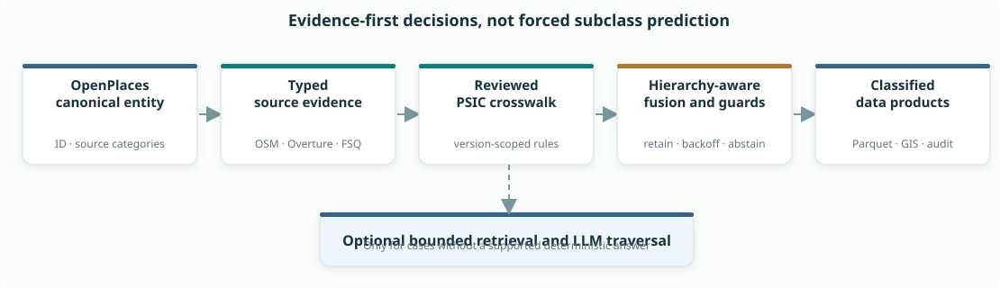

A visual algorithm guide · version 0.1.2
From place observations to defensible economic categories.
PlaceType PH classifies canonical establishments using Philippine statistical taxonomies. This guide shows exactly how source labels, reviewed rules, hierarchy constraints, uncertainty, institution evidence, and input–output correspondence become auditable results.
What the package does
PlaceType PH sits after OpenPlaces PH, which supplies one canonical record per reconciled place. PlaceType PH does not repeat the geometric or name-based record linkage upstream. It interprets the source evidence attached to those records and maps it to the official hierarchy, stopping at a defensible level rather than inventing a more specific category.

The three taxonomies answer different questions:
| Scheme | What is classified | Boundary |
|---|---|---|
| PSIC Rev. 5 | The establishment's principal economic activity | A parent code may be the best supported answer. |
| PCPC 2002 | Product and service categories | A place-only label is a potential product/service family, not its complete output basket. |
| PSCC 2022 | Traded commodities | A shop name is not proof of a particular traded commodity. Explicit commodity evidence or a confirmed mapping is required. |
The source is not a probability model. A match to a reviewed category is a rule assertion; two matching labels may derive from one provider; a code set is not proof of a specific production technology. These distinctions are preserved in outputs and audit fields.
Read this like an implementation specification
The documentation follows the two complementary styles of a visual worked derivation and a system-design manual: start with a small example, then inspect every transformation, input contract, fallback, status, implementation file, and limiting assumption. It is organized into chapters rather than one unsearchable README.
What “triangulation” means here
PlaceType PH does not use geometric triangulation (Delaunay or otherwise). Its triangulation is semantic: comparing source annotations with dependency-aware fusion and separately checking proposals against other taxonomies in a bounded diagnostic pass. The latter is advisory, not an official statistical concordance. See source triangulation and cross-taxonomy rechecking.
How to navigate
Start with Quickstart for an executable example; then read Architecture, Source evidence, and Tree fusion to understand the decision engine. The Design decision register distinguishes standard statistical ideas from package-specific choices and known fallbacks. The API and CLI and Outputs chapters are references for implementation and downstream work.
Source: Repository · README · architecture note.